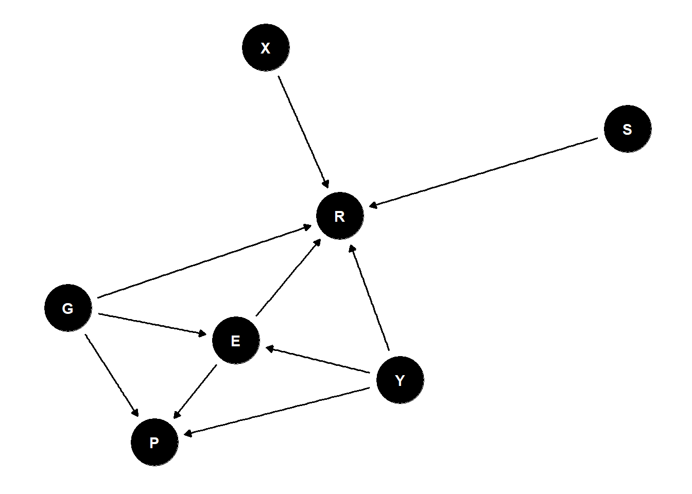

Lecture 11 - Ordered Categories
Rose / Thorn
Rose: extremely relevant
Thorn: ahhhh how to actually do it
Trolley Problems
- there is a runaway trolley, you are next to a switch
- if you do not pull the switch, it will kill 5 people. If you pull the switch, one person dies
- what is the ethics of pulling the switch
- can assess people’s reactions to trolley problems to assess ethics (can’t actually do trolley problems)
- three variables that people try to analyze: action, intention, contact
taking an action is less morally permissible than not
intention seems more monstrous
intended access are even worse if they involve contact
- trolley data: answering 30 trolley problems asking how appropriate is the action from 1-7?
- outcome data is ordered categorical data
- estimand: how do action, intention, and contact influence response to a trolley story?
- how are influences of A/I/C associated with other variables?
Ordered Categories
- categories of discrete types with ordered relationships
- distances between the categories doesn’t have to be the same (e.g., going from 4-5 is probably easier than going from 6-7 because reaching the max means more than shifting in the middle )
- anchor points are common (defaults when we are not sure/feeling meh)
- not everyone shares the same anchor points
- need to think of outcomes as cumulative distribution -> i.e., 5 is everything 5 and under added together
build log-odds parameters that correspond to this (log(probability of thing / probability of thing not happening))
logit link models
cumulative proportion -> cumulative log-odds to model these data
parameters are on cumulative log-odds scale = cutpoints
number of cutpoints you need is n-1 of outcomes (because last one is Infinity because we added the cumulative proportion of everything together to get to 1)
to predict the data, we have to recalculate cumulative proportion
- How to make it a function of variables (GLM)?
stratify cutpoints
offset each cutpoint by value of linear model
Ri ~ OrderedLogit(\(\phi_i , \alpha\))
\(\phi_i\) = \(\beta x_i\)
\(\alpha\) = cutpoint
there is no intercept in phi because the intercept is already accounted for with cutpoints
Bigger phis give you smaller average responses and smaller phis give you larger average responses (if phi is subtracted - double check software)
- Example:
- \(R_i \sim OrderedLogit(\phi_i , \alpha)\)
- \(\phi_i = \beta_A A_i + \beta_C C_i + \beta_I I_i\)
- \(\beta \sim Normal(0, 0.5)\)
- \(\alpha_j \sim Normal(0, 1)\)
data(Trolley)
d <- Trolley
dat <- list(
R = d$response,
A = d$action,
I = d$intention,
C = d$contact
)
mRX <- ulam(
alist(
R ~ dordlogit(phi,alpha),
phi <- bA*A + bI*I + bC*C,
c(bA,bI,bC) ~ normal(0,0.5),
alpha ~ normal(0,1)
) , data=dat , chains=4 , cores=4 )
precis(mRX,2)- after modelling, simulate different outcomes
# plot predictive distributions for each treatment
vals <- c(0,1,1) # A,I,C
Rsim <- mcreplicate( 100 , sim(mRX,data=list(A=vals[1],I=vals[2],C=vals[3])) , mc.cores=6 )
simplehist(as.vector(Rsim),lwd=8,col=2,xlab="Response")
mtext(concat("A=",vals[1],", I=",vals[2],", C=",vals[3]))Competing Causes
- we can stratify by competing causes - just stratify the model by the variable of interest
# total effect of gender
dat$G <- ifelse(d$male==1,2,1)
mRXG <- ulam(
alist(
R ~ dordlogit(phi,alpha),
phi <- bA[G]*A + bI[G]*I + bC[G]*C,
bA[G] ~ normal(0,0.5),
bI[G] ~ normal(0,0.5),
bC[G] ~ normal(0,0.5),
alpha ~ normal(0,1)
) , data=dat , chains=4 , cores=4 )
precis(mRXG,2)
vals <- c(0,1,1,2) # A,I,C,G
Rsim <- mcreplicate( 100 , sim(mRXG,data=list(A=vals[1],I=vals[2],C=vals[3],G=vals[4])) , mc.cores=6 )
simplehist(as.vector(Rsim),lwd=8,col=2,xlab="Response")
mtext(concat("A=",vals[1],", I=",vals[2],", C=",vals[3],", G=",vals[4]))is this the causal effect of gender?
confounded because this is a voluntary sample
everything is causally associated with participation
participation is implicitly conditioned on - it is a collider
because all our covarying effects of interest are already stratified by the collider participation, it is impossible to get the causal effect of gender BUT we can get direct effect of gender (if we stratify appropriately)

how do we put these metric predictors into the model?
Ordered Monotonic Predictors
education is an ordered category that is a predictor
unlikely that each level has the same effect
want a parameter for each level
take top level as “maximum effect” and each level gets their own beta and multiply each education level by maximum effect
individual delta parameters form a simplex (vector that sums to 1)
probability distribution that sums to 1 = Dirichlet
Dirichlet
distribution for distributions
vector that sums to 1
need the same number of input numbers as levels
bigger the numbers get, the less variation there is in the distributions
having the same number doesn’t mean they are all the same, it means there is no prior expectation of which ones are bigger than the others
# distributions of education and age
edu_levels <- c( 6 , 1 , 8 , 4 , 7 , 2 , 5 , 3 )
edu_new <- edu_levels[ d$edu ]
dat$E <- edu_new
dat$a <- rep(2,7) # dirichlet prior
mRXE <- ulam(
alist(
R ~ ordered_logistic( phi , alpha ),
phi <- bE*sum( delta_j[1:E] ) + bA*A + bI*I + bC*C,
alpha ~ normal( 0 , 1 ),
c(bA,bI,bC,bE) ~ normal( 0 , 0.5 ),
vector[8]: delta_j <<- append_row( 0 , delta ),
simplex[7]: delta ~ dirichlet( a )
), data=dat , chains=4 , cores=4 )
precis(mRXE,2)
# version with transpars
mRXE2 <- ulam(
alist(
R ~ ordered_logistic( phi , alpha ),
phi <- bE*sum( delta_j[1:E] ) + bA*A + bI*I + bC*C,
alpha ~ normal( 0 , 1 ),
c(bA,bI,bC,bE) ~ normal( 0 , 0.5 ),
transpars> vector[8]: delta_j <<- append_row( 0 , delta ),
simplex[7]: delta ~ dirichlet( a )
), data=dat , chains=4 , cores=4 )
l <- link(mRXE2)- deltas from output show the proportion of the effect that is attributed to each education level
# BIG MODEL
dat$Y <- standardize(d$age)
# single-threaded version
mRXEYG <- ulam(
alist(
R ~ ordered_logistic( phi , alpha ),
phi <- bE[G]*sum( delta_j[1:E] ) +
bA[G]*A + bI[G]*I + bC[G]*C +
bY[G]*Y,
alpha ~ normal( 0 , 1 ),
bA[G] ~ normal( 0 , 0.5 ),
bI[G] ~ normal( 0 , 0.5 ),
bC[G] ~ normal( 0 , 0.5 ),
bE[G] ~ normal( 0 , 0.5 ),
bY[G] ~ normal( 0 , 0.5 ),
vector[8]: delta_j <<- append_row( 0 , delta ),
simplex[7]: delta ~ dirichlet( a )
), data=dat , chains=4 , cores=4 )
# multi-threaded version
mRXEYGt <- ulam(
alist(
R ~ ordered_logistic( phi , alpha ),
phi <- bE[G]*sum( delta_j[1:E] ) +
bA[G]*A + bI[G]*I + bC[G]*C +
bY[G]*Y,
alpha ~ normal( 0 , 1 ),
bA[G] ~ normal( 0 , 0.5 ),
bI[G] ~ normal( 0 , 0.5 ),
bC[G] ~ normal( 0 , 0.5 ),
bE[G] ~ normal( 0 , 0.5 ),
bY[G] ~ normal( 0 , 0.5 ),
vector[8]: delta_j <<- append_row( 0 , delta ),
simplex[7]: delta ~ dirichlet( a )
), data=dat , chains=4 , cores=4 , threads=2 )
precis(mRXEYGt,2)Complex Causal Effects
causal effects (predicted consequences of intervention) require marginalization
causal effect of education requires distribution of age and gender to average over
simulate causal effects after thinking carefully over the range of the population you’d like to estimate over
problem 1: should not marginalize over this sample because of selection bias (participation)! Post-stratify to new target
problem 2: should not set all ages to the same education
- what does a real population look like?
causal effect of age requires effect of age on education, which we cannot estimate (because of participation!)
no matter how complex, its still just a generative simulation using posterior samples
need generative model to plan estimation
need generative model to compute causal estimates
Repeat Observations
repeating stories and individuals
- not confounds because the treatment is randomized
Bonus: Post-Stratification
quality of data is more important than quantity
bigger samples amplify biases
a non-representative sample can be better than a representative one
- different aspects of data matter than representation
- can correct for non-representativeness
basic problem: sample is not the target
post-stratification is principled methods for extrapolating from sample to population
post-stratification requires causal model of reasons sample differs from population
selection nodes
[S] indicates what the sample is being selected by (e.g., age -> different ages are less likely to respond to a survey)
many sources of data are already filtered by selection effects
the right thing to do depends upon causes of selection
many questions are really post-stratification questions
justified descriptions require causal information and post stratification
time trends should account for changes in measurement/population
comparison is post-stratification from one population to another
PAPER: a causal framework for cross-cultural generalizability
4 step plan for honest digital scholarship
- what are we trying to describe?
- what is the ideal data for doing so?
- what data do we actually have?
- what causes the differences between (2) and (3)?
- [optional] is there a way to use (3) + (4) to do (1)?